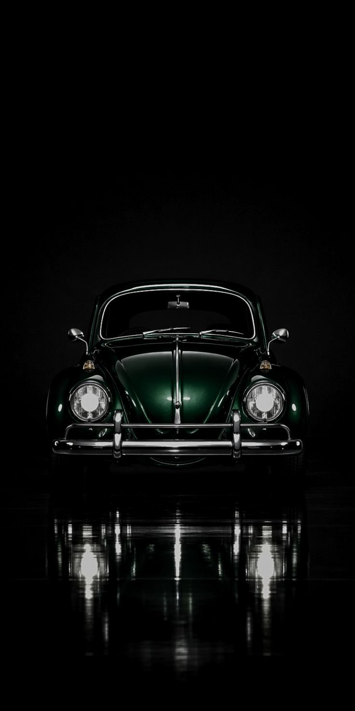
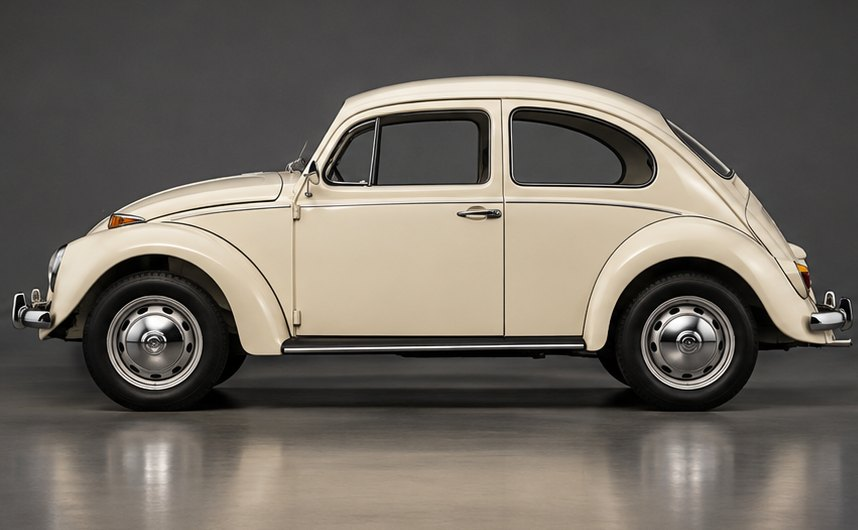
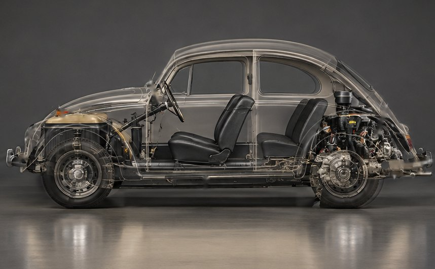
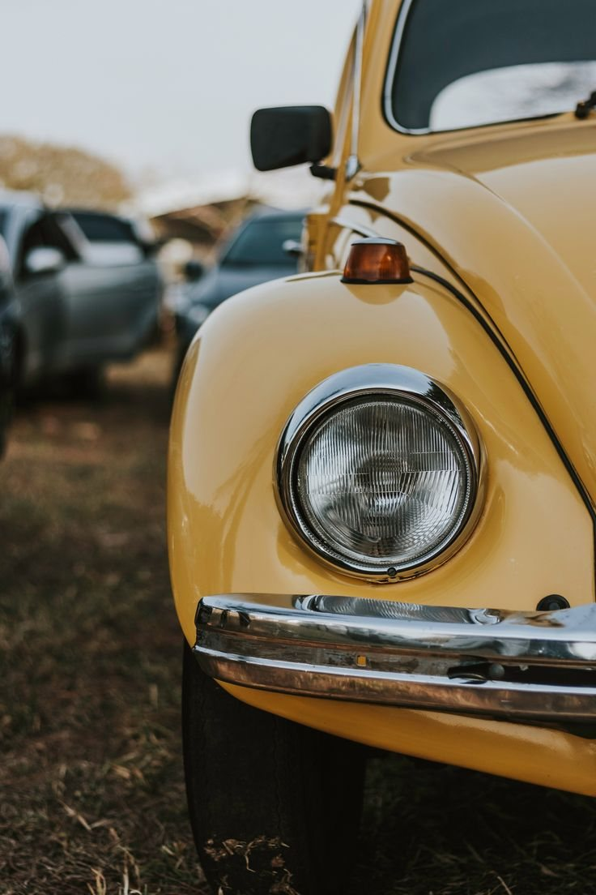

Fusca original ou baixo, rodando macio.
Oficina no Tatuapé especializada em suspensão, freio e direção. Fusca, Brasília, Kombi, Variant, SP2 e derivados, desde 2010.
EndereçoRua Serra de Bragança, 810
Tatuapé, São Paulo
HorárioSegunda a sexta, 9h às 17h
Assista no YouTubeDireção sobre Rodas, da BandImagem ilustrativa
Desde 2010, a Katraka mexe com uma coisa só: VW a ar. Suspensão, freio e direção de Fusca e derivados.
A oficina fica na Rua Serra de Bragança, no Tatuapé, e quem toca é o Alexandre, o "Katraka". Pelas contas da casa, mais de mil carros já passaram por lá.
Já apareceu na Band, no programa Direção sobre Rodas, no Canal da Peça e no blog Acelerada.
Carros que a gente atende
- Fusca
- Brasília
- Kombi
- Variant
- SP2
- e derivados a ar

Fusca é pra durar.
A suspensão também. Faça a revisão com quem é especialista e só mexe com VW a ar.

Raio-x do Fusca
Role a página. Por onde o scanner passa, aparece a parte que a gente conserta.


Imagem ilustrativaComece a rolar
O scanner começa pela frente
Cada parte que aparece é um serviço da oficina.
Pedir orçamento no WhatsAppGire a katraka.
Na dianteira, quem regula a altura são os dentes da katraka. Na traseira, é o facão, nas estrias da barra de torção. Escolha o seu VW, gire as duas e veja como ele fica.
Imagem ilustrativa
Dianteirakatraka
Traseirafacão
Simulação ilustrativa. A altura certa a gente define com o carro na oficina: rebaixar tem limite pra continuar rodando macio.
Tudo o que a gente faz
Toque no serviço e a mensagem já vai pronta pro WhatsApp.
Direto do elevador da Katraka
Alguns dos nossos trabalhos
Fusca, Variant, Kombi, Puma e buggy que passaram pela oficina. Toque na foto pra ver inteira.
Quer ver mais carros que saíram daqui? Tem bem mais no Instagram da Katraka.
Do Instagram @katrakavw
Catraca mexicana, explicada na prática
O Alexandre mostra no carro, na oficina, como funciona a catraca que regula a altura do Fusca.
Avaliações no Google
490 avaliações no Google
Nota de quem já levou o carro na oficina. Leia o que eles escreveram direto no Google.
Ler as avaliações no GoogleDúvidas de quem tem Fusca
Não achou a sua? Manda no WhatsApp que o Alexandre responde.

Vocês atendem quais carros?
Só VW a ar: Fusca, Brasília, Kombi, Variant, SP2 e os outros derivados. É nisso que a oficina é especializada desde 2010.
Dá pra rebaixar e continuar rodando macio?
Dá, até um limite. Passando dele, os amortecedores e outras peças da suspensão precisam ser acertados junto para o carro não ficar duro. A gente avisa onde fica esse limite no seu carro antes de começar.
Rebaixar gasta pneu?
Pode gastar os pneus traseiros de forma irregular. Nos pneus dianteiros, a gente confere toda a geometria junto com o rebaixamento.
Quanto custa?
Depende da altura, do modelo e do estado da suspensão. Manda pelo WhatsApp o carro, o ano e o que você quer fazer (se der, uma foto) e a gente passa o orçamento.
Preciso marcar antes de levar o carro?
Sim. Todo serviço é feito com agendamento. Chama no WhatsApp pra agendar, assim o carro já entra na fila do jeito certo.
Vocês fazem furação pra trocar a roda?
Fazemos furação de discos e tambores, pra você usar outras rodas no seu VW a ar.
Onde fica a oficina?
Rua Serra de Bragança, 810, no Tatuapé, Zona Leste de São Paulo. O mapa e o botão "Como chegar" estão logo abaixo.
Abra sua ordem de serviço
Preencha do jeito que der. A mensagem sai pronta no WhatsApp da oficina, é só apertar enviar.
- Você conta o que o carro temModelo, ano e o que está acontecendo.
- A gente responde com o orçamentoPelo WhatsApp, no horário da oficina.
- Você leva o carro no dia combinadoRua Serra de Bragança, 810, Tatuapé.
Venha de Fusca
Rua Serra de Bragança, 810
Tatuapé, São Paulo - SP
- Horário
- Segunda a sexta, das 9h às 17h
- (11) 94745-6663
- Telefone
- (11) 3539-2100
- @katrakavw